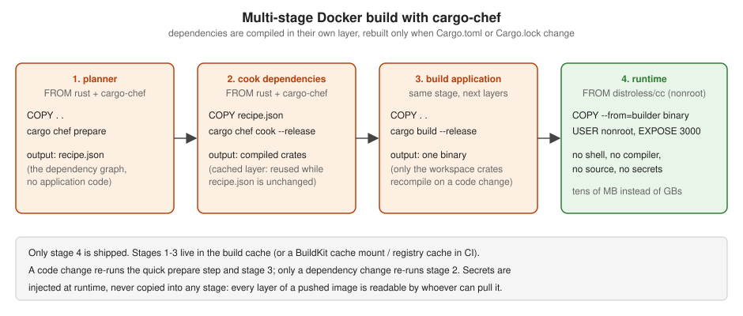

Deployment
|
This content was generated with the assistance of AI and should be verified against the official documentation before being relied on in production. |
This page is written against axum 0.8.9 on Rust 1.99 (edition 2024) with cargo-chef 0.1.78 and lambda_http 1.3.1, checked on 2026-10-06. An axum service compiles to a single native binary with no runtime to install, which makes its container images small and its cold starts fast. The work is in building that binary reproducibly and quickly, and in running it with the least privilege. Docker itself is covered in this site’s Docker section and Kubernetes in Kubernetes.
Where it runs in the request
In the request lifecycle (tokio accepts the connection, hyper parses the request, tower layers wrap the router, the router matches a route, middleware and extractors run, the handler runs, the response travels back out), deployment determines what sits in front of the first step: a reverse proxy or load balancer terminates TLS and forwards requests to the tokio listener, so client addresses, the scheme and the host arrive as forwarded headers that middleware must read explicitly. Inside the process the chain is unchanged; the container, probes and grace periods described here decide when the listener starts accepting and how it stops (Graceful Shutdown).
The binary
-
cargo build --releaseproducestarget/release/bookshelf-web, linked dynamically against glibc only (with rustls instead of OpenSSL). It runs on any image with a compatible glibc —debian:trixie-slimorgcr.io/distroless/cc-debian13. -
A fully static binary for
FROM scratchordistroless/staticcomes from the musl target:rustup target add x86_64-unknown-linux-muslandcargo build --release --target x86_64-unknown-linux-musl. Crates with C code (aws-lc-rs, ring) then need a musl C toolchain, and musl’s allocator is slow under concurrency — use mimalloc (see Performance Tuning). -
Builds that use sqlx’s checked
query!macros need either a database or the committed.sqlxquery data withSQLX_OFFLINE=true(see Databases with sqlx); a Docker build has no database, so the offline data it is.
A cargo-chef multi-stage Dockerfile

Docker caches a layer until its inputs change. Copying the whole source and running cargo build invalidates the
cache on every code change and recompiles hundreds of dependencies. cargo-chef extracts a recipe of the dependency
graph so the dependencies are compiled in a layer of their own:
# syntax=docker/dockerfile:1
FROM rust:1.99-slim-trixie AS chef
RUN cargo install cargo-chef --locked --version 0.1.78
WORKDIR /app
FROM chef AS planner
COPY . .
RUN cargo chef prepare --recipe-path recipe.json
FROM chef AS builder
COPY --from=planner /app/recipe.json recipe.json
# dependencies only: this layer is reused until Cargo.toml or Cargo.lock change
RUN cargo chef cook --release --recipe-path recipe.json
COPY . .
ENV SQLX_OFFLINE=true
RUN cargo build --release --bin bookshelf-web
FROM gcr.io/distroless/cc-debian13:nonroot AS runtime
WORKDIR /app
COPY --from=builder /app/target/release/bookshelf-web /app/bookshelf-web
COPY --from=builder /app/config /app/config
ENV APP_ENV=production
EXPOSE 3000 9000
USER nonroot:nonroot
ENTRYPOINT ["/app/bookshelf-web"]Source: cargo-chef, Docker Hub: rust and distroless
# .dockerignore -- keeps the build context small and secrets out of it
target/
.git/
.env
*.pemSource: Docker: .dockerignore files
-
Runtime image:
distroless/cccontains glibc, CA certificates and time-zone data but no shell or package manager, which removes most of what an attacker could use. Thenonroottag runs as UID 65532. Usedebian:trixie-slimwith auseradduser when you need a shell for debugging, or attach an ephemeral debug container instead. -
No secrets in the image: configuration files hold only defaults; database URLs and keys arrive as environment variables or mounted files at runtime (see Configuration). For private registries or Git dependencies during the build, use BuildKit secret mounts (
RUN --mount=type=secret,...), which never land in a layer. -
Faster CI builds: BuildKit cache mounts for
/usr/local/cargo/registryandtarget/, or a registry-backed cache (--cache-to type=registry), complement cargo-chef; see Build Cache and Multi-Stage Builds. -
Pin versions: the Rust toolchain tag, the cargo-chef version and the runtime image (by digest in production) so a rebuild of the same commit gives the same image.
-
The binary listens on
0.0.0.0inside the container (set byconfig/production.toml);127.0.0.1would be unreachable from outside the container.
Behind a reverse proxy
In production an axum service usually sits behind a load balancer, an ingress controller or a proxy such as nginx, Caddy or Envoy, which terminates TLS, enforces timeouts for slow clients and spreads load across replicas.
-
Read the client address from
X-Forwarded-FororForwardedonly when the request came through the proxy, and take the entry the proxy appended (the right-most trusted one), not the left-most, which the client controls. This matters for rate limiting and audit logs (see Rate Limiting & Load Shedding). -
Set the proxy’s idle and request timeouts consistently with the service’s own (see Request Limits & Timeouts); the proxy’s should be the longer ones, so the service answers before the proxy gives up.
-
Terminating TLS in the service itself is covered in TLS & HTTPS.
Kubernetes
apiVersion: apps/v1
kind: Deployment
metadata:
name: bookshelf-web
spec:
replicas: 3
selector:
matchLabels: { app: bookshelf-web }
template:
metadata:
labels: { app: bookshelf-web }
spec:
terminationGracePeriodSeconds: 30
securityContext:
runAsNonRoot: true
seccompProfile: { type: RuntimeDefault }
containers:
- name: bookshelf-web
image: registry.example.com/bookshelf-web:1.4.2
ports:
- { name: http, containerPort: 3000 }
- { name: metrics, containerPort: 9000 }
envFrom:
- secretRef: { name: bookshelf-web } # BOOKSHELF__DATABASE__URL, BOOKSHELF__JWT__SECRET
env:
- { name: RUST_LOG, value: "info,tower_http=warn" }
resources:
requests: { cpu: 250m, memory: 64Mi }
limits: { memory: 256Mi }
readinessProbe:
httpGet: { path: /ready, port: http }
periodSeconds: 5
livenessProbe:
httpGet: { path: /health, port: http }
periodSeconds: 10
failureThreshold: 3
lifecycle:
preStop:
sleep: { seconds: 5 }
securityContext:
allowPrivilegeEscalation: false
readOnlyRootFilesystem: true
capabilities: { drop: ["ALL"] }-
An axum service typically idles at a few megabytes of memory and starts in milliseconds, so requests can be small and a startup probe is rarely needed. Set a memory limit; leave the CPU limit out (or generous) to avoid throttling latency-sensitive requests, and set a CPU request for scheduling.
-
Tokio sizes its worker pool from
std::thread::available_parallelism, which follows a cgroup CPU limit. Without a limit it sees every core of the node, so setTOKIO_WORKER_THREADS(orworker_threadsin the runtime builder) close to the CPU request; otherwise many workers compete for a small share of CPU. -
readOnlyRootFilesystemworks because the binary writes nothing to disk; mount anemptyDirif it needs a scratch directory. -
Probes, the shutdown sequence and secrets are covered in Health Probes and Lifecycle, Graceful Shutdown and Secrets.
Platforms
Fly.io
fly launch detects the Dockerfile and writes a fly.toml; the service needs only the internal port and a health
check:
app = "bookshelf-web"
primary_region = "ams"
[http_service]
internal_port = 3000
force_https = true
auto_stop_machines = "stop"
auto_start_machines = true
min_machines_running = 1
[[http_service.checks]]
method = "GET"
path = "/health"
interval = "15s"
timeout = "2s"Secrets are set with fly secrets set BOOKSHELF__JWT__SECRET=... and arrive as environment variables. Shuttle
(shuttle-axum) deploys an annotated main without a Dockerfile; its last release (0.57) dates from September 2025,
so check the project’s status before adopting it.
AWS Lambda
A Router is a tower Service, and lambda_http runs any such service as a Lambda function behind API Gateway, a
Function URL or an Application Load Balancer:
use axum::{Router, extract::Path, routing::get};
use lambda_http::{Error, run, tracing};
async fn book(Path(isbn): Path<String>) -> String {
format!("book {isbn}\n")
}
#[tokio::main]
async fn main() -> Result<(), Error> {
tracing::init_default_subscriber(); // JSON-friendly logs for CloudWatch
// the same Router as on a server: a Router is a tower Service, and lambda_http drives it
let app = Router::new().route("/books/{isbn}", get(book));
run(app).await
}Source: lambda_http 1.3.1 and cargo-lambda
$ cargo lambda watch # local emulator on :9000
$ cargo lambda build --release --arm64 # bootstrap binary for provided.al2023
$ cargo lambda deploy bookshelf-lambdaSource: lambda_http 1.3.1 and cargo-lambda
-
Lambda bills per invocation and scales to zero; there is no long-lived server, so in-process caches, background tasks and WebSockets do not fit. Keep the database pool small (one or two connections per instance) or use RDS Proxy.
-
Rust cold starts are among the shortest on Lambda, typically tens of milliseconds. See AWS Lambda for packaging, permissions and event sources.
Cloud Run, ECS and others
The container image above runs unchanged on Google Cloud Run (which sets PORT; read it in configuration), AWS ECS on
Fargate and Azure Container Apps. Point their health checks at /health and /ready and pass secrets from the
platform’s secret manager. See Cloud Run,
ECS and Fargate and Container Apps.
Common errors
| Symptom | Cause and fix |
|---|---|
|
A glibc-linked binary in an image without glibc ( |
The container runs but nothing answers on the published port |
The service listens on |
Outbound HTTPS calls fail with certificate errors only in the image |
The runtime image has no CA certificates ( |
sqlx |
The build has no database. Commit the |
Every image build recompiles all dependencies |
Source files are copied before |
Each rollout drops requests, and pods take exactly the grace period to stop |
|
Pods are restarted while the database is down |
The liveness probe checks dependencies. Liveness should only prove the process responds; dependency checks belong in readiness. |
Where the books are outdated
Yoon (Beginning Axum, chapter 6) uses rust:1.73 images for building and running and copies the .env file into
the runtime image. Rust 1.73 cannot compile current axum (MSRV 1.80) or edition 2024 crates; use a current
rust:<stable> builder and a minimal runtime image without the compiler. Copying .env bakes the database password
and JWT secret into a layer that anyone who can pull the image can read; inject secrets at runtime instead. The rust
image also runs as root by default; the distroless nonroot image does not.